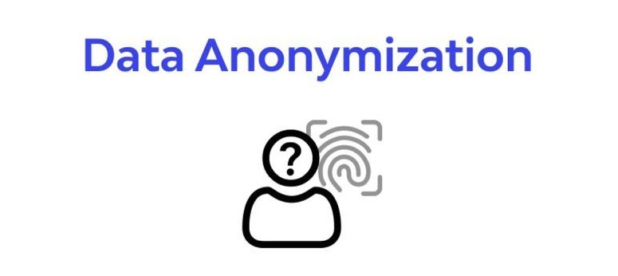
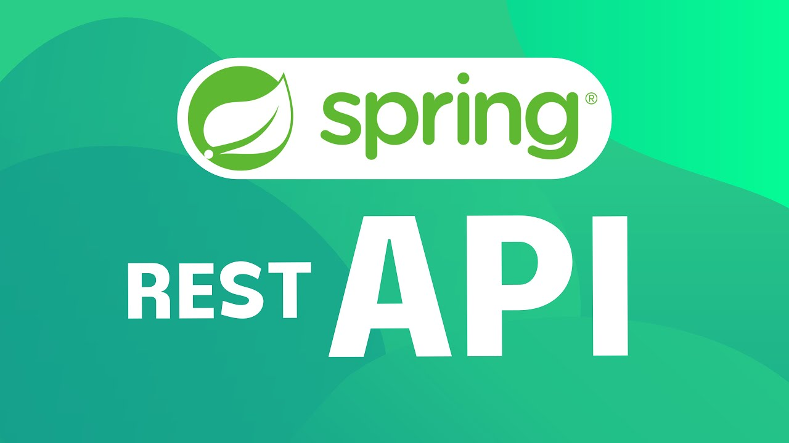
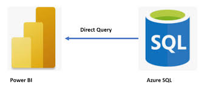
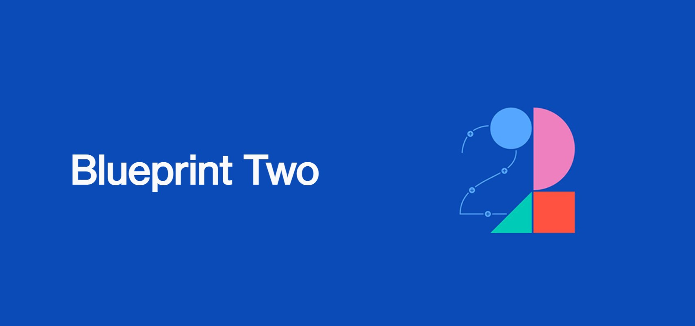
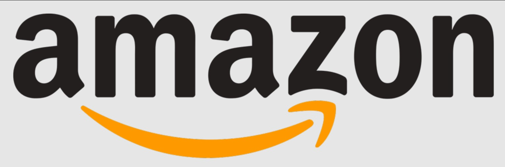
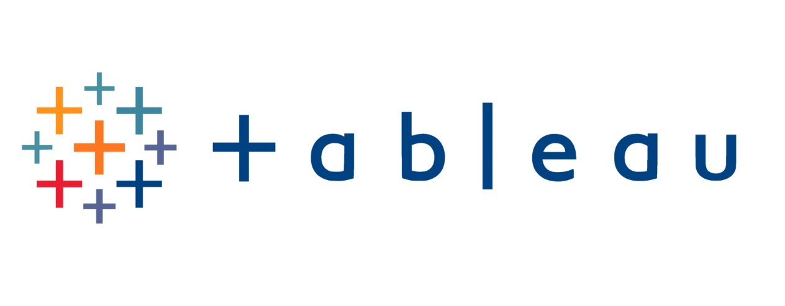

In this Project I created a spring Boot API, with utilisation of supporting tools, methodologies, and technologies, that encapsulates all fundamental and practical modules covered during training at QA academy bootcamp
I used an application back-end developed using a Java managed database which was hosted within the Cloud Provider (e.g. H2 or MySQL (local / GCP) ; a means of making API calls (Postman) and checking persistence (Workbench/H2 console)

In this project I identified top UK YouTubers in 2024 for marketing partnerships by creating a Power BI dashboard. The process involves exploring data in Excel, cleaning and transforming data in SQL Server, connecting to the youtube API, and visualizing it in Power .

I'm excited to share my latest Power BI project, where I analyzed a survey of data professionals to uncover key insights into their demographics, salaries, job satisfaction, and more. This project was inspired by a guided project from Alex the Analyst..

Blueprint Two is a transformative initiative by Lloyd's, aimed at digitalizing and modernizing the insurance market to improve efficiency, speed, and cost-effectiveness. The project is part of the broader "Future at Lloyd's" program and involves creating a digital marketplace through the implementation of advanced digital solutions.

The Automating Crypto Website API Pull project in Python uses the CoinMarketCap API to gather cryptocurrency data, normaimages/crypto.jpeglizes it into a pandas DataFrame, and adds timestamps. The script automates periodic API calls, analyzes trends, and visualizes data using Seaborn and Matplotlib, demonstrating skills in API handling, data manipulation, automation, and visualization..

The Amazon Web Scraper project automates the process of monitoring the price of a specific product on Amazon. It uses Python, with libraries like BeautifulSoup for web scraping, requests for fetching web content, and smtplib for sending email notifications. The project extracts the product's title and price, cleans the data, adds a timestamp, and writes this information to a CSV file. It includes a loop for continuous data collection and an optional email notification feature for price alerts.
